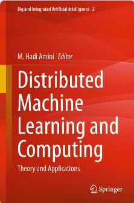
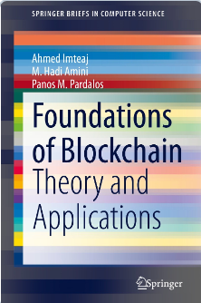
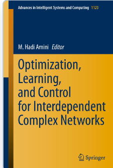
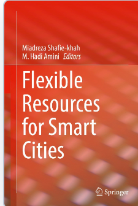
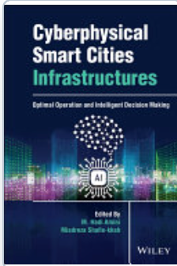
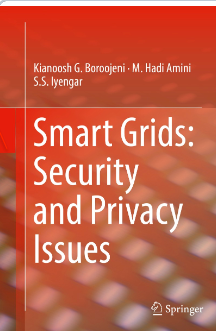
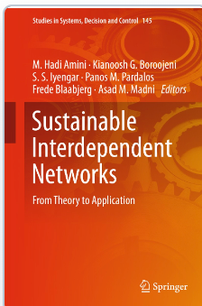
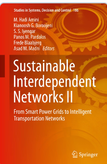
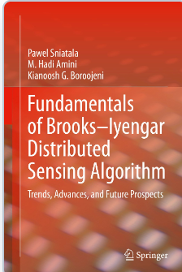

M. Hadi Amini
Associate Professor of Computer Science
Florida International University
Trustworthy AIDistributed Learning & OptimizationCyber-Physical Systems Security & Resilience
I am an Associate Professor of Computer Science at Florida International University. I received my Ph.D. from Carnegie Mellon University in 2019. At the Security, Optimization, and Learning for Interdependent Networks Lab (solid lab), my team and I create trustworthy AI and distributed decision-making methods for networked systems, bridging security, resource constraints, and real-world physical models.
[my last name] [at] cs [dot] fiu [dot] edu(305) 348-9936
Featured in & covered by
Media Coverage


Research Leadership and Initiatives
Director
solid lab
Security, Optimization, and Learning for Interdependent Networks Lab.
Visit the lab Associate Director · FIU PINational TraCR Center
U.S. Department of Transportation National Center for Transportation Cybersecurity and Resiliency.
Visit the center Director · Principal Investigator, 2023–2025ADMIRE Center
ADvanced education and research for Machine learning-driven critical Infrastructure REsilience.
About the initiativeRecent News
Media coverage
Patent & research
Data security for distributed AI systems
The 2026 granted patent covers systems and methods for ensuring data security in distributed AI systems using quantum security
National coverageUSA TODAY covers research on altered images and AI safeguards
The feature examines how seemingly benign visual changes can bypass AI protections.
Read the coverage RecognitionFIU Faculty Research Excellence Award
Recognized for sustained impact in trustworthy AI, cybersecurity, and smart infrastructure systems.
View honorsResearch portfolio
Research Areas
Trustworthy AI & Cybersecurity
Privacy, robustness against adversarial and jailbreak attacks, anomaly detection, secure AI, and trustworthy language or multimodal models.
Federated Learning & Edge AI
Secure, privacy-preserving, personalized, heterogeneous, and resource-aware learning for edge devices and autonomous systems.
Optimization & Decision-Making
Distributed optimization, control, reinforcement learning, planning, and coupled learning-and-optimization mechanisms.
Cyber-Physical Systems
Security and resilience of transportation, energy, water, robotics, smart-city, and interdependent infrastructure systems.
Published Books

Springer · 2021
Foundations of Blockchain: Theory and Applications


Springer · 2021
Flexible Resources for Smart Cities


Springer · 2017
Smart Grids: Security and Privacy Issues

Springer · 2018
Sustainable Interdependent Networks: From Theory to Application


Scholarship
Publications and Patents
Selected publications and granted patents. For the latest publication and citation record, see Google Scholar or ORCID.
Browse by Research Area
2019 onwardTrustworthy AI & Cybersecurity
Privacy, robustness against adversarial and jailbreak attacks, anomaly detection, secure AI, and trustworthy large language and multimodal models.
Federated Learning & Edge AI
Secure, privacy-preserving, personalized, and resource-aware learning for heterogeneous edge devices, autonomous systems, and distributed LLMs.
Optimization & Decision-Making
Distributed optimization, reinforcement learning, and coupled learning-and-optimization mechanisms.
Cyber-Physical Systems
Resilience and security of transportation, energy, water, robotics, and interdependent infrastructure systems.
141 records
Granted U.S. Patents4
- M. Hadi Amini, Naphtali D. Rishe, ; Assignee: The Florida International University Board of Trustees; “Anomalous activity recognition in videos”, Patent No. US11875566B1, Jan. 16, 2024. U.S. Patent and Trademark Office (USPTO). (Application Granted)
- , M. Hadi Amini, “Systems and methods for privacy-aware weapon anomaly detection via integrated object recognition and skeletal motion analysis,” Patent No. US-12462609-B1, Nov. 4, 2025. U.S. Patent and Trademark Office (USPTO). (Application Granted)
- , Shabnam Rezapour, and M. Hadi Amini, “Systems and methods for advancing the restoration process for interdependent critical infrastructures”, Patent No. US-12688476-B1, Jul. 21, 2026. U.S. Patent and Trademark Office (USPTO). (Application Granted)
- M. Hadi Amini, , and Shabnam Rezapour, “Systems and methods for ensuring data security”, Patent No. US-12717937-B1, Aug. 25, 2026. U.S. Patent and Trademark Office (USPTO). (Application Granted)
Books10
- M. Hadi Amini, Kemal Akkaya, and Mashrur Chowdhury (Editors), “Artificial Intelligence for Cyber-physical Systems Security and Resilience: Theory and Applications in Smart Environments”. Under Preparation (Tentative Publication Date: 2026)
- M. Hadi Amini (Editor), “Distributed Machine Learning and Computing - Theory and Applications”, Springer, 2024.
- M. Hadi Amini and Miadreza Shafiekhah (Editors), “Cyberphysical Smart Cities Infrastructures: Optimal Operation and Intelligent Decision Making”, Wiley, 2022.
- Miadreza Shafiekhah and M. Hadi Amini (Editors), “Flexible Resources for Smart Cities”, Springer, 2021.
- , M. Hadi Amini, and Panos Pardalos (Authors), “Foundations of Blockchain: Theory and Applications”, SpringerBriefs in Computer Science, Springer, 2021.
- Sniatala, Pawel, M. Hadi Amini, and Kianoosh G. Boroojeni (Authors), “Fundamentals of Brooks–Iyengar Distributed Sensing Algorithm: Trends, Advances, and Future Prospects”, Springer International Publishing (2020).
- M. Hadi Amini (Editor), “Optimization, learning, and control for interdependent complex networks.” Advances in Intelligent Systems and Computing, Vol. 1123, Springer Nature, 2020.
- M. Hadi Amini, Boroojeni, K. G., Iyengar, S. S., Pardalos, P. M., Blaabjerg, F., and Madni, A. M. (Editors), “Sustainable Interdependent Networks II: From Smart Power Grids to Intelligent Transportation Networks”, Studies in Systems, Decision and Control (SSDC, volume 186), Springer, 2019.
- M. Hadi Amini, Boroojeni, K. G., Iyengar, S. S., Pardalos, P. M., Blaabjerg, F., and Madni, A. M. (Editors), “Sustainable interdependent networks: From theory to application”, Studies in Systems, Decision and Control (SSDC, volume 145), Springer, 2018.
- K. G. Boroojeni, M. Hadi Amini, and S.S. Iyengar (Authors), “Smart Grids: Security and Privacy Issues”, Springer International Publishing, 2017.
Journal Articles58
- , M. Hadi Amini, and Yanzhao Wu, “In-depth Analysis of Privacy Threats in Federated Learning for Medical Data”, IEEE Journal of Biomedical and Health Informatics (J-BHI), 2026
- and M. Hadi Amini, “QuanCrypt-FL: Quantized Homomorphic Encryption with Pruning for Secure Federated Learning”, IEEE Transactions on Artificial Intelligence, 2025.
- , , Frank Mediavilla Ponce, Shabnam Rezapour, and M. Hadi Amini. "Optimizing Post-Disaster Road Restoration with Reinforcement Learning: A Traveler-Behavior-Aware Approach." Reliability Engineering & System Safety, 2026.
- and M. Hadi Amini, “BART-FL: A Backdoor Attack-Resilient Federated Aggregation Technique for Cross-Silo Applications”, IEEE Transactions on Machine Learning in Communications and Networking, 2025.
- , , Md Zarif Hossain, Shabnam Rezapour, and M. Hadi Amini, “Blockchain Empowered Cyber-Secure Federated Learning Framework for Trustworthy Edge Computing”, IEEE Transactions on Artificial Intelligence, 2025.
- Ukkusuri, Satish, Omar Faruqe Hamim, Zengxiang Lei, Eunhan Ka, M. Sabbir Salek, Mashrur Chowdhury, M. Hadi Amini, Alvaro Cardenas, and Bhavani Thuraisingham. "Cybersecurity for next-generation road transportation: A review." ACM Journal on Autonomous Transportation Systems (2025).
- , M. Hadi Amini, and Yanzhao Wu, “Security and Privacy Challenges of Large Language Models: A Survey”, ACM Computing Surveys, Volume 57, Issue 6, pp 1-39, 2025.
- and M. Hadi Amini, “Optimal Transport for Heterogeneous Federated Reinforcement Learning”, IEEE Access. 2025.
- , Shabnam Rezapour, Nazli Ceren Sahin, M. Hadi Amini, “Coordinated Restoration of Interdependent Critical Infrastructures: A Novel Distributed Decision-Making Mechanism Integrating Optimization and Reinforcement Learning”, Sustainable Cities and Society, 2024 (Accepted for publication, in press).
- , , Shabnam Rezapour, and M. Hadi Amini. “A Survey on Secure and Private Federated Learning Using Blockchain: Theory and Application in Resource-Constrained Computing.” IEEE Internet of Things Journal 10, no. 24 (2023): 21942 - 21958.
- and M. Hadi Amini, “A Secure Object Detection Technique for Intelligent Transportation Systems.” IEEE Open Journal of Intelligent Transportation Systems, 2024.
- Yin, Zeda, , Arturo S. Leon, M. Hadi Amini, Linlong Bian, and Beichao Hu. ‘‘Forecasting and Optimization for Minimizing Combined Sewer Overflows using Machine Learning Frameworks and Its Inversion Techniques.’’ Journal of Hydrology, Vol. 628, 2024, 130515.
- Farzaneh, Mohammad Amin, Shabnam Rezapour, Atefe Baghaian, and M. Hadi Amini. "An integrative framework for coordination of damage assessment, road restoration, and relief distribution in disasters." Omega 115 (2023): 102748.
- , Vahid Akbari, and M. Hadi Amini. "A Novel Scalable Reconfiguration Model for the Post-disaster Network Connectivity of Resilient Power Distribution Systems." Sensors 23, no. 3 (2023): 1200.
- , Urmish Thakker, Shiqiang Wang, Jian Li, and M. Hadi Amini. "A survey on federated learning for resource-constrained IoT devices." IEEE Internet of Things Journal 9, no. 1 (2022): 1-24.
- Khazaei, Javad, and M. Hadi Amini. "Protection of large-scale smart grids against false data injection cyberattacks leading to blackouts." International Journal of Critical Infrastructure Protection 35 (2021): 100457.
- , , , Hamed Ghiaie, Shabnam Rezapour, Arif M. Sadri, and M. Hadi Amini. "Data analytics to evaluate the impact of infectious disease on economy: Case study of COVID-19 pandemic." Patterns 2, no. 8 (2021): 100315. [Based on NSF REU Students’ Research]
- , Luis Caicedo Torres, and M. Hadi Amini. "Topological data analysis for network resilience quantification." In Operations Research Forum, vol. 2, pp. 1-17. Springer International Publishing, 2021. [Best Journal Paper Award]
- Amini, M. Hadi, , and Panos M. Pardalos. "Interdependent networks: A data science perspective." Patterns 1.1 (2020).
- Asrari, Arash, Meisam Ansari, Javad Khazaei, Poria Fajri, M. Hadi Amini, and Benito Ramos. "The impacts of a decision-making framework on distribution network reconfiguration." IEEE Transactions on Sustainable Energy 12, no. 1 (2020): 634-645.
- Samudrala, Ananth Narayan, M. Hadi Amini, Soummya Kar, and Rick S. Blum. "Distributed outage detection in power distribution networks." IEEE Transactions on Smart Grid 11, no. 6 (2020): 5124-5137.
- M. Hadi Amini, Javad Mohammadi, and Soummya Kar. "Distributed holistic framework for smart city infrastructures: Tale of interdependent electrified transportation network and power grid." IEEE Access 7 (2019): 157535-157554.
- Samudrala, Ananth Narayan, M. Hadi Amini, Soummya Kar, and Rick S. Blum. "Sensor placement for outage identifiability in power distribution networks." IEEE Transactions on Smart Grid 11, no. 3 (2019): 1996-2013.
- Yin, Zeda, , Beichao Hu, Arturo S. Leon, M. Hadi Amini, and Dwayne McDaniel. ‘‘Fast high-fidelity flood inundation map generation by super-resolution techniques.’’ Journal of Hydroinformatics (2024), 26 (1): 319–336.
- Aurelien Meray, Roger Boza, Masudur R. Siddiquee, Cesar Reyes, M. Hadi Amini, and Nagarajan Prabakar. ‘‘Subset Sensor Selection Optimization: A Genetic Algorithm Approach with Innovative Set Encoding Methods.’’ IEEE Sensors Journal, 2023.
- , Farid Ghareh Mohammadi, Manuel Matus, Farzan Shenavarmasouleh, , Ioannis Zisis, and M. Hadi Amini, “Towards Real-time House Detection in Aerial Imagery Using Faster Region-based Convolutional Neural Network”, IPSI Transactions on Internet Research, vol. 19(2), pp. 46-54, 2023.
- Lawrence Egharevba, Sanjoy Kumar, M. Hadi Amini, Malek Adjouadi, and Naphtali Rishe. “Detecting and Removing Clouds Affected Regions from Satellite Images Using Deep Learning”, IPSI BgD Transactions on Internet Research, vol. 19(2), pp. 13-23, 2023.
- Rishe, Naphtali, M. Hadi Amini, and Malek Adjouadi. "Scenic routing navigation using property valuation." Journal of big Data 10, no. 1 (2023): 57.
- , and M. Hadi Amini. "Leveraging asynchronous federated learning to predict customers financial distress." Intelligent Systems with Applications 14 (2022): 200064.
- , Farid Ghareh Mohammadi, and M. Hadi Amini. "A2BCF: An Automated ABC-Based Feature Selection Algorithm for Classification Models in an Education Application." Applied Sciences 12, no. 7 (2022): 3553.
- Sargolzaei, Saman, Ajeet Kaushik, Seyed Soltani, M. Hadi Amini, Mohammad Reza Khalghani, Navid Khoshavi, and Arman Sargolzaei. "Preclinical Western Blot in the Era of Digital Transformation and Reproducible Research, an Eastern Perspective." Interdisciplinary Sciences: Computational Life Sciences 13, no. 3 (2021): 490-499.
- , Irfan Khan, Javad Khazaei, and M. Hadi Amini. "FedResilience: A federated learning application to improve resilience of resource-constrained critical infrastructures." Electronics 10, no. 16 (2021): 1917.
- and M. Hadi Amini. "FedPARL: Client activity and resource-oriented lightweight federated learning model for resource-constrained heterogeneous IoT environment." Frontiers in Communications and Networks 2 (2021): 657653.
- Rezaeimozafar, Mostafa, Mohsen Eskandari, M. Hadi Amini, Mohammad Hasan Moradi, and Pierluigi Siano. "A bi-layer multi-objective techno-economical optimization model for optimal integration of distributed energy resources into smart/micro grids." Energies 13, no. 7 (2020): 1706.
- Bahrami, Shahab, M. Hadi Amini, Miadreza Shafie-Khah, and Joao PS Catalao. "A decentralized renewable generation management and demand response in power distribution networks." IEEE Transactions on Sustainable Energy 9, no. 4 (2018): 1783-1797.
- Amini, M. Hadi, and Orkun Karabasoglu. "Optimal operation of interdependent power systems and electrified transportation networks." Energies 11, no. 1 (2018): 196.
- Bahrami, Shahab, and M. Hadi Amini. "A decentralized trading algorithm for an electricity market with generation uncertainty." Applied Energy 218 (2018): 520-532.
- Mozafar, Mostafa Rezaei, M. Hadi Amini, and M. Hasan Moradi. "Innovative appraisement of smart grid operation considering large-scale integration of electric vehicles enabling V2G and G2V systems." Electric Power Systems Research 154 (2018): 245-256.
- Pramod, T. C., Kianoosh G. Boroojeni, M. Hadi Amini, N. R. Sunitha, and S. S. Iyengar. "Key pre-distribution scheme with join leave support for SCADA systems." International Journal of Critical Infrastructure Protection 24 (2019): 111-125.
- Adnan, Nadia, Shahrina Md Nordin, M. Hadi Amini, and Naseebullah Langove. "What make consumer sign up to PHEVs? Predicting Malaysian consumer behavior in adoption of PHEVs." Transportation Research Part A: Policy and Practice 113 (2018): 259-278.
- Gholami, Amin, Tohid Shekari, Mohammad Hassan Amirioun, Farrokh Aminifar, M. Hadi Amini, and Arman Sargolzaei. "Toward a consensus on the definition and taxonomy of power system resilience." IEEE Access 6 (2018): 32035-32053.
- Nasri, Amirhossein, Amir Abdollahi, Masoud Rashidinejad, and M. Hadi Amini. "Probabilistic–possibilistic model for a parking lot in the smart distribution network expansion planning." IET Generation, Transmission & Distribution 12, no. 13 (2018): 3363-3374.
- Bahrami, Shahab, M. Hadi Amini, Miadreza Shafie-khah, and Joao PS Catalao. "A decentralized electricity market scheme enabling demand response deployment." IEEE Transactions on Power Systems 33, no. 4 (2017): 4218-4227.
- Adnan, Nadia, Shahrina Mohammad Nordin, Imran Rahman, and M. Hadi Amini. "A market modeling review study on predicting Malaysian consumer behavior towards widespread adoption of PHEV/EV." Environmental Science and Pollution Research 24 (2017): 17955-17975.
- Boroojeni, Kianoosh G., M. Hadi Amini, S. S. Iyengar, Mohsen Rahmani, and Panos M. Pardalos. "An economic dispatch algorithm for congestion management of smart power networks: An oblivious routing approach." Energy Systems 8 (2017): 643-667.
- Vahdati, Pouya Mahdavipour, Luigi Vanfretti, M. Hadi Amini, and Ahad Kazemi. "Hopf bifurcation control of power systems nonlinear dynamics via a dynamic state feedback controller—Part II: performance evaluation." IEEE Transactions on Power Systems 32, no. 4 (2017): 3229-3236.
- Mozafar, Mostafa Rezaei, Mohammad H. Moradi, and M. Hadi Amini. "A simultaneous approach for optimal allocation of renewable energy sources and electric vehicle charging stations in smart grids based on improved GA-PSO algorithm." Sustainable Cities and Society 32 (2017): 627-637.
- Boroojeni, Kianoosh G., M. Hadi Amini, Shahab Bahrami, S. S. Iyengar, Arif I. Sarwat, and Orkun Karabasoglu. "A novel multi-time-scale modeling for electric power demand forecasting: From short-term to medium-term horizon." Electric Power Systems Research 142 (2017): 58-73.
- M. Hadi Amini, Paul McNamara, Paul Weng, Orkun Karabasoglu, and Yinliang Xu. "Hierarchical electric vehicle charging aggregator strategy using Dantzig-Wolfe decomposition." IEEE Design & Test 35, no. 6 (2017): 25-36.
- Boroojeni, Kianoosh, M. Hadi Amini, Arash Nejadpak, Tomislav Dragičević, Sundaraja Sitharama Iyengar, and Frede Blaabjerg. "A novel cloud-based platform for implementation of oblivious power routing for clusters of microgrids." IEEE Access 5 (2016): 607-619.
- M. Hadi Amini, Mohsen Parsa Moghaddam, and Orkun Karabasoglu. "Simultaneous allocation of electric vehicles’ parking lots and distributed renewable resources in smart power distribution networks." Sustainable Cities and Society 28 (2017): 332-342.
- Vahdati, Pouya Mahdavipour, Ahad Kazemi, M. Hadi Amini, and Luigi Vanfretti. "Hopf bifurcation control of power system nonlinear dynamics via a dynamic state feedback controller–part I: theory and modeling." IEEE Transactions on Power Systems 32, no. 4 (2016): 3217-3228.
- M. Hadi Amini, M. Hadi, Amin Kargarian, and Orkun Karabasoglu, "ARIMA-based decoupled time series forecasting of electric vehicle charging demand for stochastic power system operation." Electric Power Systems Research 140 (2016): 378-390.
- Kamyab, Farhad, M. Hadi Amini, Siamak Sheykhha, Mehrdad Hasanpour, and Mohammad Majid Jalali. "Demand response program in smart grid using supply function bidding mechanism." IEEE Transactions on Smart Grid 7, no. 3 (2015): 1277-1284.
- Sarwat, Arif I., M. Hadi Amini, Alexander Domijan, Aleksandar Damnjanovic, and Faisal Kaleem. "Weather-based interruption prediction in the smart grid utilizing chronological data." Journal of Modern Power Systems and Clean Energy 4, no. 2 (2016): 1-8.
- Kianoosh G. Boroojeni, Shekoufeh Mokhtari, M. Hadi Amini, and S. S. Iyengar. "Optimal two-tier forecasting power generation model in smart grids." International Journal of Information Processing, 8: 79-88, (2014).
- M. Hadi Amini, Mahdi Jamei, Christopher R. Lashway, Arif I. Sarwat, Kang K. Yen, Alexander Domijan, and Faisal Kaleem. "Plug-in electric vehicle owner behavior study using fuzzy systems." International Journal of Power and Energy Systems 35, no. 2 (2015): 40.
- M. Hadi Amini, and Arif I. Sarwat. "Optimal reliability-based placement of plug-in electric vehicles in smart distribution network." International Journal of Energy Science, Vol. 4, No. 2, (2014).
Conference and Workshop Papers64
- and M. Hadi Amini, “Don't Overthink, Don't Underthink: Toward Adaptive Reasoning in Agentic AI”, ACM AI Leadership Summit, Atlanta, Georgia, 2026.
- , M. Hadi Amini, and Yanzhao Wu, “An Accurate and Efficient Two-Stage Framework for Gun Detection in Videos”, 8th IEEE International Conference on Cognitive Machine Intelligence (IEEE CogMI 2026)
- , Daniel Correa, Camilo Roa, Ryan Smith, M. Hadi Amini, Leonardo Bobadilla, “Event-Triggered Coverage Planning for Towable Sensing Systems”, 2026 IEEE/RSJ International Conference on Intelligent Robots and Systems (IROS) [This year the conference received 4,348 contributed paper submissions. From these papers, 1,585 were accepted, which represents an acceptance rate of 36%.]
- Zain Syed, , Zeda Yin, M. Hadi Amini, and Arturo S. Leon , “Continual Learning with Elastic Weight Consolidation for Robust Combined Sewer Overflow Optimization via Neural Inversion”, World Environmental and Water Resources Congress 2026 https://doi.org/10.1061/9780784486931.045
- , Tero Kaarlela, Paulo Padrao, Jose Fuentes, Leonardo Bobadilla, and M. Hadi Amini. "AI-Driven Heterogeneous Robot Teams for Critical Infrastructure Resilience." IEEE OCEANS Conference, 2025.
- and M. Hadi Amini, “JaiLIP: Jailbreaking Vision-Language Models via Loss Guided Image Perturbation”, In 2025 24th IEEE International Conference on Machine Learning and Applications (ICMLA).
- , Md Tasnim Jawad, , M. Hadi Amini, and Yanzhao Wu, Jailbreaking Large Vision Language Models in Intelligent Transportation Systems, In 2025 24th IEEE International Conference on Machine Learning and Applications (ICMLA).
- and M. Hadi Amini, “Optimal Transport-based Domain Alignment as a Preprocessing Step for Federated Learning”, IEEE International Conference on Image Processing, IEEE ICIP 2025, Anchorage, Alaska, USA.
- Zain Syed, , Yin, Zeda, M. Hadi Amini, and Arturo S. Leon, “Optimal Control of Combined Sewer Overflow (CSO) Using Gradient-Based Neural Network Inversion with Projected Precipitation Inputs”, World Environmental and Water Resources Congress 2025.
- and M. Hadi Amini, "An Empirical Analysis of Secure Federated Learning for Autonomous Vehicle Applications." In Proceedings of the ASCE International Conference on Computing in Civil Engineering, Carnegie Mellon University, Pittsburgh, Pennsylvania, USA, July 28-31, 2024. (Accepted, in press)
- , M. Hadi Amini, and Yanzhao Wu, ‘‘Privacy Risks Analysis and Mitigation in Federated Learning for Medical Images.’’, IEEE International Conference on Bioinformatics and Biomedicine (BIBM 2023). [Acceptance Rate: 19.7%]
- Md Zarif Hossain, , Abdur R. Shahid, Saika Zaman, Sajedul Talukder and M. Hadi Amini, ‘‘Intrusion Attack and Defense Mechanism for Federated Learning-Empowered Connected Autonomous Vehicles’’ 6th IEEE Conference on Dependable and Secure Computing (IEEE DSC), Tampa, FL, 2023.
- Yin, Zeda, Arturo S. Leon, Abbas Sharifi, and M. Hadi Amini. "Optimal Control of Combined Sewer Systems to Minimize Sewer Overflows by Using Reinforcement Learning." In World Environmental and Water Resources Congress 2023, pp. 711-722.
- , , Jason Liu, and M. Hadi Amini. "A Federated Learning Framework for Automated Decision Making with Microscopic Traffic Simulation." In 2022 International Conference on Computer Communications and Networks (ICCCN), pp. 1-9. IEEE, 2022 (invited paper). [Acceptance Rate 28.9%]
- Yin, Zeda, , Arturo S. Leon, M. Hadi Amini, and Linlong Bian. "A Machine Learning Framework for Overflow Prediction in Combined Sewer Systems." In World Environmental and Water Resources Congress 2022, pp. 194-205.
- , , and M. Hadi Amini. "Exploiting Federated Learning Technique to Recognize Human Activities in Resource-Constrained Environment." In Intelligent Human Computer Interaction: 13th International Conference, IHCI 2021, Kent, OH, USA, December 20–22, 2021. [Acceptance Rate: 20%]
- M. Hadi Amini, Laurent L. Njilla, , and . "Distributed Network Optimization for Secure Operation of Interdependent Complex Networks." In 2021 International Conference on Computational Science and Computational Intelligence (CSCI), pp. 1777-1782. IEEE, 2021.
- , , and M. Hadi Amini. "Federated deep learning for heterogeneous edge computing." In 2021 20th IEEE International Conference on Machine Learning and Applications (ICMLA), pp. 1146-1152. IEEE, 2021.
- , S. S. Iyengar, and M. Hadi Amini. "On the Impact of the Embedding Process on Network Resilience Quantification." In 2021 International Conference on Computational Science and Computational Intelligence (CSCI), pp. 836-839. IEEE, 2021.
- Mohammadi, Farid Ghareh, Farzan Shenavarmasouleh, Khaled Rasheed, Thiab Taha, M. Hadi Amini, and Hamid R. Arabnia. "The application of Evolutionary and Nature Inspired Algorithms in Data Science and Data Analytics." In 2021 International Conference on Computational Science and Computational Intelligence (CSCI), pp. 255-261. IEEE, 2021.
- , Shabnam Rezapour, and M. Hadi Amini. "Reinforcement Learning-Based Control Systems For Networked Power Infrastructures." In 2021 International Conference on Computational Science and Computational Intelligence (CSCI), pp. 1113-1116. IEEE, 2021.
- , Farid Ghareh Mohammadi, and M. Hadi Amini. "OptABC: An Optimal Hyperparameter Tuning Approach for Machine Learning Algorithms." In 2021 20th IEEE International Conference on Machine Learning and Applications (ICMLA), pp. 1138-1145. IEEE, 2021.
- , Taban Eslami, Fahad Saeed, and M. Hadi Amini. "DeepCOVIDNet: Deep convolutional neural network for COVID-19 detection from chest radiographic images." Machine Learning for Biological and Medical Image Big Data Workshop, In 2021 IEEE International Conference on Bioinformatics and Biomedicine (BIBM), pp. 1703-1710. IEEE, 2021.
- Haque, Nur Imtiazul, Alvi Ataur Khalil, Mohammad Ashiqur Rahman, M. Hadi Amini, and Sheikh Iqbal Ahamed. "BIOCAD: Bio-inspired optimization for classification and anomaly detection in digital healthcare systems." In 2021 IEEE International Conference on Digital Health (ICDH), pp. 48-58. IEEE, 2021. [Acceptance Rate: About 25%]
- , Farid Ghareh Mohammadi, Shabnam Rezapour, Matthew W. Ohland, and M. Hadi Amini. "Search algorithms for automated hyper-parameter tuning." 17th International Conference on Data Science, 2021.
- , and M. Hadi Amini. "FedAR: Activity and resource-aware federated learning model for distributed mobile robots." In 2020 19th IEEE International Conference on Machine Learning and Applications (ICMLA), pp. 1153-1160. IEEE, 2020.
- Mohammadi, Farid Ghareh, Farzan Shenavarmasouleh, M. Hadi Amini, and Hamid R. Arabnia. "Evolutionary algorithms and efficient data analytics for image processing." In 2021 15th International Conference on Ubiquitous Information Management and Communication (IMCOM), pp. 1-8. IEEE, 2021.
- Mohammadi, Farid Ghareh, , M. Hadi Amini, and Hamid R. Arabnia. "Human motion recognition using zero-shot learning." In Advances in Artificial Intelligence and Applied Cognitive Computing: Proceedings from ICAI’20 and ACC’20, pp. 171-181. Springer International Publishing, 2021.
- Mohammadi, Farid Ghareh, Farzan Shenavarmasouleh, M. Hadi Amini, and Hamid R. Arabnia. "Impact of weather conditions on the COVID-19 pandemic in the united states: A big data analytics approach." In 2020 International Conference on Computational Science and Computational Intelligence (CSCI), pp. 418-423. IEEE, 2020.
- Shenavarmasouleh, Farzan, Farid Ghareh Mohammadi, M. Hadi Amini, and Hamid R. Arabnia. "DRDr II: Detecting the severity level of diabetic retinopathy using mask rcnn and transfer learning." In 2020 International Conference on Computational Science and Computational Intelligence (CSCI), pp. 788-792. IEEE, 2020.
- Rahman, Syed, , Irfan Khan, and M. Hadi Amini. "Cascaded solid state transformer structure to power fast EV charging stations from medium voltage transmission lines." In 2020 54th Asilomar Conference on Signals, Systems, and Computers, pp. 1359-1364. IEEE, 2020.
- Rahman, Syed, Irfan Ahmad Khan, and M. Hadi Amini. "A review on impact analysis of electric vehicle charging on power distribution systems." In 2020 2nd International Conference on Smart Power & Internet Energy Systems (SPIES), pp. 420-425. IEEE, 2020.
- Mohammadi, Farid Ghareh, Farzan Shenavarmasouleh, M. Hadi Amini, and Hamid R. Arabnia. "Malware detection using artificial bee colony algorithm." In Adjunct Proceedings of the 2020 ACM International Joint Conference on Pervasive and Ubiquitous Computing and Proceedings of the 2020 ACM International Symposium on Wearable Computers, pp. 568-572. 2020.
- M. Hadi Amini, , and Javad Mohammadi. "Distributed machine learning for resilient operation of electric systems." In 2020 International Conference on Smart Energy Systems and Technologies (SEST), pp. 1-6. IEEE, 2020.
- , M. Hadi Amini, and Javad Mohammadi. "Leveraging decentralized artificial intelligence to enhance resilience of energy networks." In 2020 IEEE Power & Energy Society General Meeting (PESGM), pp. 1-5. IEEE, 2020.
- Arriarán, Sergio Salas, Carlos Valdez, Kalun Lau, M. Hadi Amini, Marek Kropidłowski, and Paweł Śniatała. "Sensor Fusion Algorithm Implementation on Microchip PIC Microcontroller." In 2020 27th International Conference on Mixed Design of Integrated Circuits and System (MIXDES), pp. 277-281. IEEE, 2020.
- Mohammadi, Farid Ghareh, Hamid R. Arabnia, and M. Hadi Amini. "On parameter tuning in meta-learning for computer vision." In 2019 International Conference on Computational Science and Computational Intelligence (CSCI), pp. 300-305. IEEE, 2019.
- , and M. Hadi Amini. "Distributed sensing using smart end-user devices: Pathway to federated learning for autonomous IoT." In 2019 International Conference on Computational Science and Computational Intelligence (CSCI), pp. 1156-1161. IEEE, 2019. [Best Paper Award]
- Mohammadi, Farid Ghareh, and M. Hadi Amini. "Promises of meta-learning for device-free human sensing: learn to sense." In Proceedings of the 1st ACM International Workshop on Device-Free Human Sensing, pp. 44-47. 2019.
- Samudrala, Ananth Narayan, M. Hadi Amini, Soummya Kar, and Rick S. Blum. "Optimal sensor placement for topology identification in smart power grids." In 2019 53rd Annual Conference on Information Sciences and Systems (CISS), pp. 1-6. IEEE, 2019.
- Alkaf, Mohammed, Javad Khazaei, M. Hadi Amini, and Darius Khezrimotlagh. "Optimal attack strategy for multi-transmission line congestion in cyber-physical smart grids." In 2019 Tenth International Green and Sustainable Computing Conference (IGSC), pp. 1-6. IEEE, 2019.
- M. Hadi Amini, Javad Mohammadi, and Soummya Kar. "Distributed intelligent algorithm for interdependent electrified transportation and power networks." In Proceedings of the 9th ACM Symposium on Design and Analysis of Intelligent Vehicular Networks and Applications, pp. 73-79. 2019.
- Hoseinzadeh, Bakhtyar, M. Hadi Amini, Claus Leth Bak, and Frede Blaabjerg. "High impedance DC fault detection and localization in HVDC transmission lines using harmonic analysis." In 2018 IEEE International Conference on Environment and Electrical Engineering and 2018 IEEE Industrial and Commercial Power Systems Europe (EEEIC/I&CPS Europe), pp. 1-4. IEEE, 2018.
- Hoseinzadeh, Bakhtyar, M. Hadi Amini, Kianoosh G. Boroojeni, and Claus Leth Bak. "RTDS demonstration of harmonic amplification in under sea/ground cables of offshore wind farms." In 2018 IEEE International Conference on Environment and Electrical Engineering and 2018 IEEE Industrial and Commercial Power Systems Europe (EEEIC/I&CPS Europe), pp. 1-5. IEEE, 2018.
- Hoseinzadeh, Bakhtyar, M. Hadi Amini, and Claus Leth Bak. "Centralized load shedding based on thermal limit of transmission lines against cascading events." In 2017 IEEE Power & Energy Society General Meeting, pp. 1-5. IEEE, 2017.
- M. Hadi Amini, Kianoosh G. Boroojeni, Tomislav Dragičević, Arash Nejadpak, S. S. Iyengar, and Frede Blaabjerg. "A comprehensive cloud-based real-time simulation framework for oblivious power routing in clusters of DC microgrids." In 2017 IEEE Second International Conference on DC Microgrids (ICDCM), pp. 270-273. IEEE, 2017.
- M. Hadi Amini, Kianoosh G. Broojeni, Tomislav Dragičević, Arash Nejadpak, S. S. Iyengar, and Frede Blaabjerg. "Application of cloud computing in power routing for clusters of microgrids using oblivious network routing algorithm." In 2017 19th European Conference on Power Electronics and Applications (EPE'17 ECCE Europe), pp. P-1. IEEE, 2017.
- Boroojeni, Kianoosh G., M. Hadi Amini, and S. S. Iyengar. "An oblivious routing-based power flow calculation method for loss minimization of smart power networks: A theoretical perspective." In 2016 15th IEEE International Conference on Machine Learning and Applications (ICMLA), pp. 641-645. IEEE, 2016.
- M. Hadi Amini, Kianoosh G. Boroojeni, Cheng Jian Wang, Arash Nejadpak, S. S. Iyengar, and Orkun Karabasoglu. "Effect of electric vehicle parking lots' charging demand as dispatchable loads on power systems loss." In 2016 IEEE International Conference on Electro Information Technology (EIT), pp. 0499-0503. IEEE, 2016.
- Liu, Gongxun, M. Hadi Amini, Kianoosh G. Boroojeni, Arash Nejadpak, and S. S. Iyengar. "Best practices for online marketing in twitter: an experimental study." In 2016 IEEE International Conference on Electro Information Technology (EIT), pp. 0504-0509. IEEE, 2016.
- Boroojeni, Kianoosh G., M. Hadi Amini, Arash Nejadpak, S. S. Iyengar, Bakhtyar Hoseinzadeh, and Claus Leth Bak. "A theoretical bilevel control scheme for power networks with large-scale penetration of distributed renewable resources." In 2016 IEEE International Conference on Electro Information Technology (EIT), pp. 0510-0515. IEEE, 2016.
- M. Hadi Amini, Mostafa Rahmani, Kianoosh G. Boroojeni, George Atia, S. Sitharama Iyengar, and Orkun Karabasoglu. "Sparsity-based error detection in DC power flow state estimation." In 2016 IEEE International Conference on Electro Information Technology (EIT), pp. 0263-0268. IEEE, 2016.
- M. Hadi Amini, Rupamathi Jaddivada, Sakshi Mishra, and Orkun Karabasoglu. "Distributed security constrained economic dispatch." In 2015 IEEE Innovative Smart Grid Technologies-Asia (ISGT ASIA), pp. 1-6. IEEE, 2015.
- Sarwat, Arif I., Alexander Domijan, M. Hadi Amini, Aleksandar Damnjanovic, and Amirhasan Moghadasi. "Smart Grid reliability assessment utilizing Boolean Driven Markov Process and variable weather conditions." In 2015 North American Power Symposium (NAPS), pp. 1-6. IEEE, 2015.
- M. Hadi Amini, Justin Frye, Marija D. Ilić, and O. Karabasoglu. "Smart residential energy scheduling utilizing two stage mixed integer linear programming." In 2015 North American Power Symposium (NAPS), pp. 1-6. IEEE, 2015.
- M. Hadi Amini, Marija D. Ilić, and O. Karabasoglu. "DC power flow estimation utilizing Bayesian-based LMMSE estimator." In 2015 IEEE Power & Energy Society General Meeting, pp. 1-5. IEEE, 2015.
- M. Hadi Amini, O. Karabasoglu, Marija D. Ilić, Kianoosh G. Boroojeni, and S. S. Iyengar. "ARIMA-based demand forecasting method considering probabilistic model of electric vehicles' parking lots." In 2015 IEEE Power & Energy Society General Meeting, pp. 1-5. IEEE, 2015.
- M. Hadi Amini, Arif I. Sarwat, S. S. Iyengar, and Ismail Guvenc. "Determination of the minimum-variance unbiased estimator for DC power-flow estimation." In IECON 2014-40th Annual Conference of the IEEE Industrial Electronics Society, pp. 114-118. IEEE, 2014.
- M. Hadi Amini, and Arif Islam. "Allocation of electric vehicles' parking lots in distribution network." In Innovative Smart Grid Technologies (ISGT), pp. 1-5. IEEE, 2014.
- Moghadasi, Amir Hasan, Arif Islam, and M. Hadi Amini. "LVRT capability assessment of FSIG-based wind turbine utilizing UPQC and SFCL." In 2014 IEEE PES General Meeting| Conference & Exposition, pp. 1-5. IEEE, 2014.
- M. Hadi Amini, M. Parsa Moghaddam, and E. Heydarian Forushani. "Forecasting the PEV owner reaction to the electricity price based on the customer acceptance index." In 2013 Smart Grid Conference (SGC), pp. 264-267. IEEE, 2013.
- M. Hadi Amini, Behrouz Nabi, and Mahmoud-Reza Haghifam. "Load management using multi-agent systems in smart distribution network." In 2013 IEEE Power & Energy Society General Meeting, pp. 1-5. IEEE, 2013.
- M. Hadi Amini, and M. Parsa Moghaddam. "Probabilistic modelling of electric vehicles' parking lots charging demand." In 21st Iranian Conference on Electrical Engineering (ICEE), pp. 1-4. IEEE, 2013.
- M. Hadi Amini, B. Nabi, M. Parsa Moghaddam, and S. A. Mortazavi. "Evaluating the effect of demand response programs and fuel cost on PHEV owners behavior, a mathematical approach." In Iranian Conference on Smart Grids, pp. 1-6. IEEE, 2012.
Book Chapters5
- , , Urmish Thakker, Shiqiang Wang, Jian Li, and M. Hadi Amini. "Federated Learning for Resource-Constrained IoT Devices: Panoramas and State of the Art." Federated and Transfer Learning (2022): 7-27.
- M. Hadi Amini. "A multi-layer physic-based model for electric vehicle energy demand estimation in interdependent transportation networks and power systems." Optimization in Large Scale Problems: Industry 4.0 and Society 5.0 Applications (2019): 243-253.
- Zhang, Jianyi, M. Hadi Amini, and Paul Weng. "A hierarchical approach based on the frank–wolfe algorithm and Dantzig–Wolfe decomposition for solving large economic dispatch problems in smart grids." Smart Microgrids: From Design to Laboratory-Scale Implementation (2019): 41-56.
- Moutis, Panayiotis, M. Hadi Amini, Irfan Ahmad Khan, Guannan He, Javad Mohammadi, Soummya Kar, and Jay Whitacre. "A survey of recent developments and requirements for modern power system control." Pathways to a Smarter Power System (2019): 289-316.
- M. Hadi Amini, Shahab Bahrami, Farhad Kamyab, Sakshi Mishra, Rupamathi Jaddivada, Kianoosh Boroojeni, Paul Weng, and Yinliang Xu. "Decomposition methods for distributed optimal power flow: panorama and case studies of the DC model." In Classical and recent aspects of power system optimization, pp. 137-155. Academic Press, 2018.
People & Mentoring
Research Group
Ph.D. advising, alumni placements, and broader student and teacher mentoring.
Academic and mentoring impact at a glance
120+Journal and conference papers
4Granted U.S. patents
$8.3M+Total project funding
9Published books
15Ph.D. students (7 graduated)
Current Ph.D. Students
ABD = All-But-Dissertation QEP = Qualifying Exam Passed
Ervin MooreABDMajor Ph.D. Co-Advisor Securing Federated Learning via Blockchain and Quantum Encryption: Theory and Applications — honors and placement details
- Summer 2026 Internship, National Urban Security Technology Laboratory (NUSTL), Manhattan, funded by DHS HS-POWER (U.S. Department of Homeland Security Professional Opportunities for Student Workforce to Experience Research).
- Summer 2025 Internship, DHS ADAC-ARCTIC.
- 2026 DHS DAC-ARCTIC Ph.D. Fellowship.
- 2025 Ph.D. Fellowship with the Applied Environmental Research Center (AERC) and Arctic Domain Awareness Center (ADAC), funded by the U.S. Department of Homeland Security (DHS), Science and Technology (S&T) Directorate, Office of University Programs (OUP) under the Scientific Leadership Award (SLA) program.
- 2024 DHS ADMIRE Ph.D. Fellowship.
- 2022–2023 DHS CAESCIR Ph.D. Fellowship.
Md Jueal MiaABDMajor Ph.D. Advisor
Secure Edge AI: From Federated Learning to Distributed LLMs (tentative)
Badhan Chandra DasABDMajor Ph.D. Co-Advisor Securing AI Applications for Mission-Critical Domains (tentative) — honors and placement details
- 2025 FIU UGS Excellence Award for Outstanding Paper or Manuscript.
- Second runner-up in the GSAW Scholarly Forum poster presentations at FIU.
Ruth HammondQEPMajor Ph.D. Advisor
To be determined
Anthony DevesaQEPMajor Ph.D. Co-Advisor Learning-based Robotics for Critical Infrastructure Resilience (tentative) — honors and placement details
- U.S. Naval Research Lab, Summer 2025 — Space Robotics, Roboticist.
- Northrop Grumman, Summer 2026 — Guided Missiles Engineering, Systems Engineer.
Hojat SalehiABDMajor Ph.D. Advisor
To be determined
Ahmed AljohaniQEPMajor Ph.D. Advisor
To be determined
Joaquin Molto AlemanyQEPMajor Ph.D. Advisor
To be determined
Ph.D. Alumni
Ahmed ImteajGraduated Summer 2022Major Ph.D. Advisor Distributed Machine Learning Algorithms for Resource-Constrained Heterogeneous IoT Environments 2022 — honors and placement details
- 2024 NSF Computer and Information Science and Engineering (CISE) Research Initiation Initiative (CRII) Award.
- 2024 Outstanding Teacher of the Year, School of Computing, SIUC.
- 2022 Real Triumphs Graduate in the FIU Summer 2022 Commencement Ceremony.
- M.S. in Computer Science from FIU with the Outstanding Master’s Degree Graduate Award from the College of Engineering and Computing.
- 2022 Outstanding Student Life Award (Graduate Scholar of the Year), Division of Academic and Student Affairs at FIU.
- 2021 Best Graduate Student in Research Award, School of Computing and Information Sciences at FIU.
- Best Paper Award, IEEE CSCI 2019.
Leila ZahediGraduated Summer 2022Major Ph.D. Advisor An Evolutionary Optimization Algorithm for Automated Classical Machine Learning 2022 — honors and placement details
- 2022 Outstanding Student Life Award (Graduate Leader of the Year), Division of Academic and Student Affairs at FIU.
- Dissertation Year Fellowship from the University Graduate School, FIU, 2022.
- Scholarships from the Anita Borg Institute and the National Foundation of Science to attend the Grace Hopper Celebration (GHC17, GHC19) and Richard Tapia Conference (TAPIA19, vTAPIA20).
Khandaker Mamun AhmedGraduated Summer 2024Major Ph.D. Advisor Computer Vision for Anomaly Detection: From Centralized to Distributed Learning 2024 — honors and placement details
- 2022 Best Graduate Student in Research Award from the Knight Foundation School of Computing and Information Sciences at FIU.
Namrata SahaGraduated Summer 2024Major Ph.D. Co-Advisor Coupled Reinforcement Learning for Resilient Interdependent Networks 2024 — honors and placement details
Luiz Manella PereiraGraduated Summer 2025Major Ph.D. Advisor Optimal Transport for Machine Learning: from Federated Learning to Complex Network Resilience 2025 — honors and placement details
- Summer Internship, Savannah River National Lab, 2024.
- 2021 Best Journal Paper Award, Operations Research Forum Journal.
- FIU Worlds Ahead Graduate, Magna Cum Laude Graduate, Dean’s High Achievers Society, and BGS Honor Society.
- 2022–2025 Graduate Assistance in Areas of National Need (GAANN) Ph.D. Fellowship, U.S. Department of Education.
- 2021–2022 DHS CAESCIR Ph.D. Fellowship.
- 2020 DHS CAESCIR Undergraduate Fellowship.
Marian Temprana AlonsoGraduated Fall 2025Major Ph.D. Advisor An Information-Theoretic Framework for Energy-Efficient Communication, Compression, and Inference 2025 — honors and placement details
- ISIT DeepVerse 6G Machine Learning Challenge Winning Team.
- GAANN Fellowship.
- Grace Hopper Celebration Scholar.
Yasaman SaadatiGraduated Fall 2025Major Ph.D. Advisor Feature Representation Learning: From Generalized to Personalized Federated Learning 2025 — honors and placement details
Master’s Advising and Mentoring
- Liwei Ding
- Shamim Yazdani
- Jonathan Smith
- Fares Amamou
- Samuel Muvdi
- Naadir Kirlew
- Maryam Babaee
- Mohammad Amin Farzaneh
- Anthony Devesa
Undergraduate Researchers and Alumni
- Khanh Truong
- Nathanael Gelin
- Linza Gelin
- Ronaldo Carrazco
- Isabella Peng
- Syed Hannan Shah
- Emily Lofaro
- Alexander Delgado
- Brian Rodriguez
- Brhian Davila
- Caio Moreti Koga
- Aaron Turransky
- Luiz Manella Pereira
- Calvin Mark
- Meleik Hyman
- Raghad Alabagi
- Glenda Gonzalez
- Ricardo Boetto
Teachers
- Zhaleh Hoseinian
- Marisa Behar
- Yoandra Abad
- Todd Thompkins
- Jamez R. Williams
- Mahmoud Kamel
- Frederic Nau
Academic Service
Professional Activities
Selected editorial, reviewing, organizing, speaking, and research-leadership activities.
Editorial and Professional Roles
- 2026–presentAssociate Editor, ACM Computing Surveys.
- 2024–presentAssociate Editor, IEEE Transactions on Information Forensics and Security.
- 2024–presentAssociate Editor, IEEE Transactions on Machine Learning in Communications and Networking.
- 2020–2025Associate Editor, Springer Nature Operations Research Forum.
- 2020–2026Associate Editor, Frontiers in Communications and Networks, Data Science for Communications.
- 2020–2026Editorial Board Member, Smart Cities.
Reviewing, Proposal Panels, and Conference Committees
- Panelist for various National Science Foundation directorates, including the Directorate for Computer and Information Science and Engineering (CISE), Directorate for Engineering (ENG), Directorate for STEM Education (EDU), and Directorate for Technology, Innovation and Partnerships (TIP).
- Reviewer for NeurIPS 2026 and ICLR 2025.
- Co-Chair, Special Session on Robustness and Security of Large Language Models, IEEE ICMLA 2025.
- Technical Program Committee, IEEE ICDCS 2024 track on Federated Learning, Analytics, and Deployment.
- Organizing Committee, Workshop on Resource-Constrained Learning in Wireless Networks at MLSys 2023.
- Chair, FIU Knight Foundation School of Computing and Information Sciences Seminar Series, overseeing approximately 50 seminars during 2020–2022.
Selected Talks and Presentations
- May 2026Distributed Decision-Making Integrating Optimization and Reinforcement Learning, AIMOR Workshop, Banff, Canada.
- Dec. 2025(Distributed) AI for Interdependent Cyber-Physical Systems, CSoNet 2025 Rising Star Talk.
- May 2025(Distributed) AI for Interdependent Cyber-Physical Systems, ORAU-sponsored LLM Nexus Workshop.
- Dec. 2024Coupled Learning and Optimization for Interdependent Networks, MITRE Corporation.
- Apr. 2024Secure Distributed Learning for Cyber-Physical Systems Resilience and Security, University of Texas at Austin.
- May 2023Cybersecurity and Resilience of U.S. Transportation Systems, U.S. Department of Transportation Headquarters.
Research Leadership and Initiatives
TraCR
Associate Director and FIU Principal Investigator, National Center for Transportation Cybersecurity and Resiliency.
Visit the TraCR centerADMIRE
Director and Principal Investigator, U.S. Department of Homeland Security ADvanced education and research for Machine learning-driven critical Infrastructure REsilience (ADMIRE) Center, 2023–2025.
solid lab
Director of the Security, Optimization, and Learning for Interdependent Networks Lab.
View the research groupFederated Education
Organizer of the FeDucation webinar series on federated learning, machine learning, data analytics, and computer vision.
Watch the webinar seriesRecognition
Awards & Honors
National, international, university, college, and school recognitions since joining FIU.
National/International
- Senior Member, Association for Computing Machinery (ACM).
- IEEE Big Data Security Junior Research Award for exceptional contributions to Big Data Security in Cyber-Physical Systems, IEEE Computer Society.
Read more +Read less −
This honor is awarded to only one junior researcher each year. It was presented at the 11th IEEE International Conference on Big Data Security on Cloud (BigDataSecurity 2025), held alongside IEEE High Performance and Smart Computing (HPSC) 2025, IEEE Intelligent Data and Security (IDS) 2025, and IEEE SmartCloud 2025 in New York City, USA, from May 9–11, 2025. - Rising Star (Sciences), Academy of Science, Engineering and Medicine of Florida (ASEMFL); 22 of 168 nominees were recognized (about 13%).
Read more +Read less −
The Rising Stars program of the Academy of Science, Engineering and Medicine of Florida (ASEMFL) recognizes early-career faculty at the Assistant Professor level in academia or junior-to-mid-level professionals—less than 15 years in an initial independent position—in industry, non-academic nonprofit organizations, or government, who work or live in Florida and whose innovation and scholarly achievements demonstrate exceptional promise in addressing critical scientific, engineering, or medical challenges. - Exemplary Editor Award, IEEE Transactions on Machine Learning in Communications and Networking.
- Ranked among the top 2% of cited scientists, according to Elsevier’s October 2023 report. View report.
- Senior Member, Institute of Electrical and Electronics Engineers (IEEE).
Read more +Read less −
IEEE Senior Membership is an honor bestowed only on those who have made significant contributions to the profession. - Best Journal Paper Award, jointly with FIU Ph.D. student Luiz Manella Pereira, Springer Nature Operations Research Forum.
- Air Force Research Laboratory (AFRL) Visiting Faculty Research Program, Summer 2020.
- Best Conference Paper Award, jointly with FIU Ph.D. student Ahmed Imteaj, IEEE Conference on Computational Science & Computational Intelligence.
University/College
- FIU College of Engineering and Computing Faculty Research Excellence Award.
Read more +Read less −
From the award letter: This recognition honors outstanding scholarly contributions and sustained research impact in trustworthy artificial intelligence, cybersecurity, and smart infrastructure systems. The record of competitive external funding, high-impact publications, patents, and citation influence reflects an exceptional research portfolio that advances both academic knowledge and real-world applications. The work has strengthened the College’s mission of research innovation and global impact, particularly in areas critical to national security, healthcare, and public safety. The award also recognizes important contributions to mentoring and developing the next generation of researchers. - FIU College of Engineering and Computing Faculty Mentorship Award.
Read more +Read less −
Mentors are faculty who share their knowledge and experience to enhance the scholarly, professional, and personal development of students. Mentors are more than faculty advisors: they guide students in developing research topics, help them understand ethical issues in their disciplines, assist them in publishing their work, introduce them to career opportunities and professional networks, and serve as role models who provide moral, emotional, and intellectual support. - FIU Top Scholar Award, Research and Creative Activities, Junior Faculty with Significant Grants (Sciences), Office of Faculty Leadership & Success.
- Faculty Excellence in Teaching Award, Office of Faculty Leadership and Success, FIU.
- Rewarding Excellence in Teaching Incentives (RETI) Award, FIU.
Read more +Read less −
The RETI award recognizes faculty who work to create learning-centered, inclusive classroom experiences, provides faculty an opportunity to build a teaching-excellence portfolio, and serves as a foundation for future awards.
School
- Excellence in Applied Research Award, Knight Foundation School of Computing and Information Sciences, FIU.
- Excellence in Teaching Award, School of Computing and Information Sciences, FIU.
Education
Teaching
Selected courses, course development, and teaching recognitions at Florida International University.
Courses
COT 5443
Optimization for Computing: Theory and Applications
Graduate course proposed, developed, and offered in Spring 2020, 2021, 2022, and 2023.
COT 3510
Applied Linear Structures for Computing
Undergraduate course proposed, developed, and offered from Fall 2021 through Fall 2025.
COT 3100
Discrete Structures
Offered in Fall 2019, Fall 2020, and Fall 2021.
BTT
Machine Learning Foundations
Lab facilitator for Break Through Tech online cohorts in Summer 2025 and Summer 2026.
Curriculum Development
- Developed a microcredential certificate in Artificial Intelligence in Crime Analysis and Detection.
- Created a computing-focused linear algebra course connecting foundational mathematics to machine learning, artificial intelligence, and cybersecurity.
- Developed a graduate optimization course tailored to computing applications.
- Designed online and hybrid teaching approaches informed by Quality Matters and FIU teaching-development programs.
- Initiated and organized the Federated Education (FeDucation) webinar series for broader access to federated learning, machine learning, data analytics, and computer vision.
Teaching Honors
- FIU Faculty Excellence in Teaching Award.
- Rewarding Excellence in Teaching Incentives Award.
- Excellence in Teaching Award, School of Computing and Information Sciences.